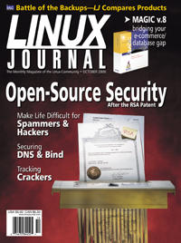

Shutdown Archive web server
Search:
Linux Journal
Issue #78/October 2000

Features
Open-Source Intrusion Detection Tools for Linux
by Bobby S. Wen
Armed with Linux and Open Source tools, you can even keep an ISP secure.
Securing DNS and BIND
by Michael D. Bauer
Decreasing the vulnerability of your DNS server is largely a matter of staying current and private.
Using Postfix for Secure SMTP Gateways
by Mick Bauer and Brenno de Winter
Improve your site's e-mail hygiene and make life difficult for spammers and hackers.
Focus: Security
by Don Marti
The time for security excuses is over.
Indepth
RTcmix for Linux (Part 1)
by Dave Topper
In the first part of this three-part series on real-time audio synthesis we take you through the history and basis of RTcmix.
Apache User Authentication
by Ibrahim F. Haddad
A guide to setting up user authentication for the Apache web server running on Linux, using the plaintext file method.
Distance Education Using Linux and the MBone
by Kelly Davis, Dr. Tom Miller and Charles Price
There is more to the Internet than sending JPGs. See how Linux and the MBone addresses the nedds of distance learning.
Automated Installation of Large-Scale Linux Networks
by Ali Raza Butt and Jahangir Hasan
Need to load Linux on 100 workstations? Learn some tricks and techniques that could save you days of tedious work.
Graphics: Pick a Card...Any Card
by Matt Matthews
With graphics capabilities being so important and new cards appearing all the time, you need a scorecard to pick the right one. Here it is ...
BusyBox: A Swiss Army Knife for Linux
by Nicholas Wells
Learn how to save disk space with this open source tool for embedded systems.
Toolbox
Kernel Korner
Contributing to the Linux KernelThe Linux Configuration System
by Joseph Pranevich
At the Forge
Configuring, Tuning, and Debugging Apache
by Reuven M. Lerner
Cooking with Linux
A Few Recipes for Easier Firewalls
by Marcel Gagné
Columns
Linley on Linux Linux Drives Digital Audio Revolution
by Linley Gwennap
Focus on Software
by David A. Bandel
Embedded Systems News
by Rick Lehrbaum
The Last Word
by Stan Kelly-Bootle
Reviews
Comparison of Backup Products
by Charles Curley
Easysoft Data Access Middleware
by Jon Valesh
Magic Enterprises Edition 8.3 for Linux
by Jon Valesh
Omnis Studio RAD
by Nick Wells
Unix Backup and Recovery
by Charles Curley
LaTeX for Linux
by Ben Crowder
The XML Handbook 2nd Edition
by Daniel Lazenby
Securing Linux
by Charles Curley
Building Linux and OpenBSD Firewalls
by Ralph Krause
Linux Programming Bible
by Ben Crowder
Departments
Letters
upFRONT
From the Editor
Goodbye Bandits, Hello Security
by Don Marti
From the Publisher
UnixWare and Linux Get Hitched
by Phil Hughes
Best of Technical Support
New Products
Archive Index
Shutdown Archive web server
Search:
Copyright © 1994 - 2018
Linux Journal
. All rights reserved.